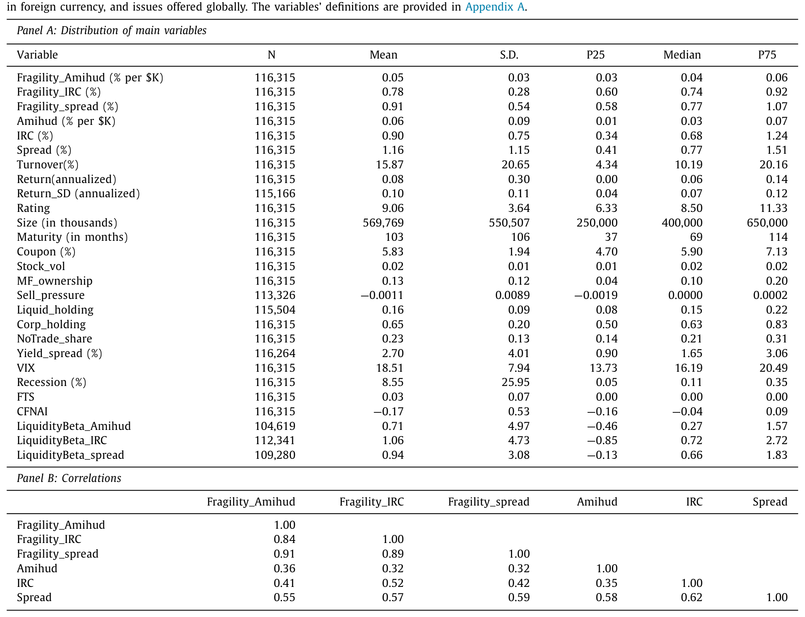
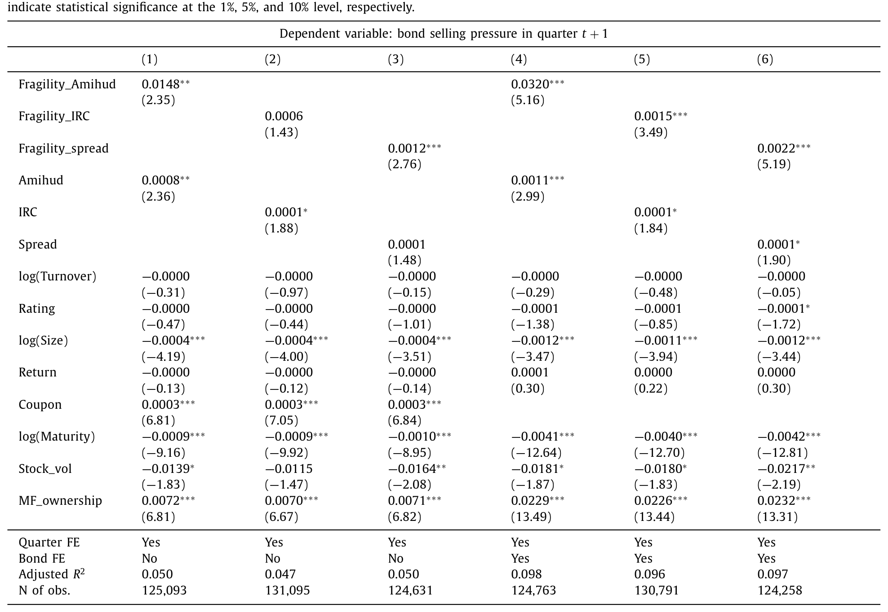
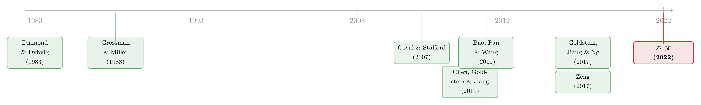

基金越难脱手，它手里的债券越「抖」
本文读的是 Jiang, Li, Sun & Wang (2022, Journal of Financial Economics)：开放式公司债基金一边持有难以脱手的债券，一边向投资者承诺「每天都能赎回」。作者把这种期限错配落到了单只债券头上——一只债券若主要被「难卖」的基金持有，它就背着更高的「潜在脆弱性 (latent fragility)」。结果是，脆弱性高的债券在随后一个季度波动更大（Amihud 口径下，脆弱性每升高一个标准差，年化波动率多出 1.15%，约为中位数的 16%），在新冠冲击里跌得更狠、反弹也更猛。
1 引言：一个「期限错配」的老问题，搬了个家
先讲一个金融学里最古老的故事。
银行的资产是长期的、难以变现的贷款，负债却是随时可以取走的存款。平日里相安无事，可一旦风吹草动，谁先跑谁就能拿到全额，落在后面的人只能分剩下的——于是「不跑白不跑」。这就是 Diamond and Dybvig (1983) 笔下的银行挤兑：脆弱性并不来自资产本身有多坏，而来自「液体的负债」与「固体的资产」之间那道结构性的裂缝。后来人们发现，货币市场基金也有同样的毛病（Kacperczyk and Schnabl, 2013; Schmidt et al., 2016）。
那么，开放式公司债基金呢？
它简直是这套逻辑的完美翻版，甚至更夸张。它的资产是公司债——一种在场外市场里以天为单位、靠交易商一笔一笔撮合出来的、出了名难卖的东西；它的负债却是基金份额——投资者每个交易日收盘都能按净值赎回。这中间的「流动性转换 (liquidity transformation)」，正是这类基金最迷人、也最危险的地方。
而它偏偏又长大得飞快。2010 到 2019 这十年，开放式债券基金净流入了 $2.2 trillion，握着约 11% 的美国固定收益市场；在公司债这一块，它的分量更重——2019 年共同基金持有 $1.89 trillion 的公司债，占当时 $9.60 trillion 存量的约 20%；而在高收益债里，国际货币基金组织估计有超过 40% 被共同基金拿在手里。一个体量如此庞大、又天生背着期限错配的玩家，会不会把自己的脆弱「传染」给整个公司债市场？
这正是这篇论文要回答的问题。
2 核心想法：把基金的「跑得快」算到债券头上
过去这条文献，落脚点几乎都在基金层面：Chen et al. (2010) 用支付互补性 (payoff complementarities) 说明持有非流动资产的基金更容易遭遇放大的赎回；Goldstein et al. (2017) 进一步发现，公司债基金的资金流对业绩呈现「跌时跑得更快」的凹形 (concave) 反应；Zeng (2017) 则给出了一个基金挤兑与流动性管理的动态理论。一句话——大家都在说：基金本身是脆弱的。
但这篇文章想问一个更深的问题：脆弱性会不会顺着持仓的链条，渗到单只债券里去？
接着，一个自然的难题冒了出来：脆弱性是个「潜在 (latent)」的东西，平时看不见，只在冲击来临时才暴露。你怎么在风平浪静的时候，就给每一只债券标出它的脆弱程度？
作者的答案很巧。它不去看债券本身有多不流动，而去看「谁在持有它」：
如果一只债券，主要被那些「整个组合都很难脱手」的基金持有，那么一旦市场出事、这些基金遭遇赎回、被迫抛售，这只债券就会成为首当其冲被甩卖的对象——它的脆弱性，是从它的持有人那里「继承」来的。
换句话说，债券的脆弱性 = 它的持有人有多「跑得快」的加权平均。这就是全文的那一个核心，后面所有的检验，都是围着它转。
3 怎么造这把尺子：两步走的「脆弱性」
整个测度分两步搭起来，逻辑清清楚楚。
第一步，给每只基金打一个「不流动评分 (illiquidity score)」。 一只基金有多「难卖」，取决于它组合里的债券平均有多不流动，用持仓票面金额加权：
$$Fund\ illiquidity_{j,t}^{type} = \frac{\sum_{i=1}^{I} Holding\ amount_{j,i,t} \times Bond\ illiquidity_{i,t}^{type}}{\sum_{i=1}^{I} Holding\ amount_{j,i,t}}$$
这里 \(type\) 取三种主流的债券流动性口径：Amihud 测度（衡量给定交易规模下的价格冲击）、IRC（imputed round-trip cost，往返交易成本），以及 Spread（同日同券的有效买卖价差，沿用 Hong and Warga, 2000）。作者顺手验证了这个评分的合理性：评分越高（越不流动）的基金，净收益更高、换手更低、费率更高、未来两年的收益波动也更大——这正是「靠承担流动性风险吃溢价」的画像。
第二步，把基金的评分「倒灌」回债券。 一只债券的脆弱性，等于持有它的所有基金的不流动评分、按各基金在该债券上的持仓加权：
$$Fragility_{i,t}^{type} = \frac{\sum_{j=1}^{J} Holding\ amount_{j,i,t} \times Fund\ illiquidity_{j,t}^{type}}{\sum_{j=1}^{J} Holding\ amount_{j,i,t}}$$
这第二个方程，就是全文的心脏。把它拆开来看：
请注意这把尺子的一个微妙之处：它刻意不直接用债券自身的流动性。债券 \(i\) 本身流不流动，是 \(a1\) 这个权重里间接含着的信息；而 \(a2\) 衡量的，是它「室友们」的整体处境。一只本身还算好卖的债券，如果不幸和一堆烂资产挤在同一批难卖的基金里，它也会被打上高脆弱性的标签——因为冲击来时，基金不会只卖烂的，它会卖得动的先卖。这一点，恰恰是后面识别「抛售压力」而非「信息不对称」的关键。
4 数据：四条线索拼出一只债券的「持有人画像」
要把这把尺子造出来，需要把四个数据库缝在一起，样本期 2006 年 1 月到 2020 年 3 月（新冠分析延到 4 月）：
- Thomson Reuters Lipper eMAXX：机构（含共同基金）在季末的债券级持仓，无幸存者偏差。这是「谁持有谁」的底图。作者剔除掉公司债持仓从未超过
$1 million、或公司债占固定收益持仓从未超过 10% 的基金，留下4192只 eMAXX 基金。 - CRSP 无幸存者偏差共同基金库：按基金名称匹配，补上基金收益、规模 (AUM)、现金持仓结构等特征。匹配上
3288只基金，其公司债持仓占全部 eMAXX 基金的 90% 以上。 - Enhanced TRACE：公司债的逐笔成交与价格，用来算三种流动性测度。
- Mergent FISD：债券的发行特征与评级历史。作者只保留固定利率债，剔除可回售、可转换、永续、可交换、已宣告赎回的债券，以及 ABS、扬基债、加拿大债、外币与全球发行债。
最后按八位 CUSIP 把 TRACE/FISD 并到持仓上，约 75% 的持仓能匹配到债券数据。样本里一只「平均」的公司债：存量 $570 million、剩余期限约 8.6 年、票息 6%、评级 BBB、季度换手 16%。

Table 1
值得一提的背景趋势是：共同基金持有美国公司债的比例，从 2006 年的 8% 一路升到 2019 年的 20%——这个玩家不光大，而且越来越大，越来越活跃（Cai et al., 2019 指出它是公司债市场里最活跃的交易者）。
5 主要结果：脆弱性，预言了下一季度的「抖」
铺垫到这里，真正关键的一步来了：脆弱性能不能预测债券未来的波动？
基准回归把债券下一季度的收益波动率，对当期脆弱性做回归。结论干净有力：脆弱性越高的债券，下一季度波动越大。以 Amihud 口径为例——脆弱性每上升一个标准差，债券年化收益波动率多出约 1.15%，相当于波动率中位数的约 16%。这不只是统计上显著，量级上也相当可观。
而且它顽强。作者依次塞进一串控制变量：信用评级、期限、债券自身的流动性、共同基金持股比例——脆弱性的系数依然站得住；再控制当期波动率（即只看「增量」预测力），甚至直接放进债券固定效应、把所有不随时间变的横截面差异全吸掉，结论仍然成立。这一步很重要：它说明脆弱性预测的，不是「某些债券天生就抖」这种固定属性，而是随持有人结构变化的、动态的风险。

Table 3
6 机制：从赎回，到抛售，到价格的「过冲与回弹」
光有相关性还不够。作者反复追问的那个核心是：这股预测力，到底从哪儿来？
如果脆弱性的故事是对的，那它的传导链条应该是这样的——脆弱性高 → 冲击来时基金遭遇更大赎回 → 基金被迫抛售持仓 → 价格因非基本面原因被打下去 → 事后再慢慢弹回来。于是作者沿着这条链，一环一环去验。
第一环，脆弱性是否预测「资金流驱动的抛售」？ 借用 Coval and Stafford (2007) 那套度量基金被迫卖出的方法，作者发现：脆弱性更高的债券，下一季度确实有更多「由赎回逼出来的抛售 (outflows-induced selling)」。
第二环，这种抛售是否伴随价格的过冲？ 是的——抛售发生的当季，价格下跌；随后的几个季度里，价格又逐步反转 (gradual reversal) 回去。先被砸下去，再爬回来，这正是「非基本面的卖压」该有的指纹：如果跌是因为基本面变坏，价格不该系统性地弹回来。
两环扣上，链条就闭合了：脆弱性 → 卖压 → 价格波动。卖压，是连接脆弱性与波动的那条主管道。
7 COVID-19：一场上天给的天然实验
理论说得再漂亮，也需要一次真刀真枪的压力测试。2020 年 3 月，机会来了。
新冠冲击下，公司债市场被打得措手不及，债券基金遭遇巨额赎回。作者做了一件很「干净」的事：用2019 年底（危机爆发前）测出的脆弱性，把债券分成三档（terciles），然后看它们在 2020 年初的表现。
结果几乎是教科书式的。1 月和 2 月，高脆弱与低脆弱债券的走势几乎贴在一起；可大流行一来，分化骤然出现——高脆弱档的跌幅是低脆弱档的两倍，在 3 月 23 日美联储宣布二级市场公司信贷便利 (SMCCF) 之前，一度跌到约 -10%。而 SMCCF 一出，价格迅速反弹，且高脆弱档弹得更猛。用收益率利差 (yield spread) 看，是同一个故事的另一面。
注意这里的逻辑闭环：跌得更深、弹得更猛，恰恰是「卖压驱动的过度反应」——基本面没那么糟，价格却被赎回潮砸出了坑，等流动性（这次是美联储兜底）一回来，坑就被填平。一个在危机前就能算出来的指标，竟precisely预言了危机中哪些债券会「塌」得最厉害，这是相当强的样本外证据。
作者还把视野从这一次危机，推广到整个样本期里所有的「承压时刻」：当 VIX 高企、当资金涌向避险资产 (flight to safety)、当经济下行时，脆弱性对未来波动的预测力都更强。脆弱性，是一个专在坏天气里发作的风险。
（关于公司债基金在加息周期里的脆弱与流动性管理，可参见《加息前夜的悄然撤离：当「算不准的净值」反而成了基金的减震器》。）
8 反转之前，先堵住两条「后门」
一个聪明的读者读到这里，一定会皱眉：会不会有别的东西，同时推高了「脆弱性」和「波动率」，制造出一个虚假的因果？作者预判了这两条最致命的后门，并逐一堵死。
后门一：流动性共动 (liquidity commonality)。 公司债的流动性是高度共动的（Bao et al., 2011）。会不会是这样——一只债券的投资基金里别的债券流动性，本身就含着这只债券未来流动性与波动的信息，而脆弱性只是这个共动的「影子」？作者先用滚动窗口回归，给每只债券估出一个对市场流动性的暴露，即流动性 beta；如果共动是真凶，控制了流动性 beta 之后，脆弱性的预测力就该被削弱。然而无论在新冠场景还是全样本里，脆弱性依旧显著。这条后门，关上了。
后门二：信息不对称 (information asymmetry)。 也许某些基金信息收集能力强，专挑信息不对称程度高的债券持有，而这类债券本就更不流动、也更波动。怎么区分？作者用了一个漂亮的「指纹检验」——看脆弱性如何影响债券收益的序列相关性：
- 若脆弱性反映的是私有信息，按 Llorente et al. (2002)，信息会被逐步纳入价格，应表现为收益的正向延续 (continuation)；
- 若脆弱性反映的是因卖方急于「即时变现」而产生的卖压（Grossman and Miller, 1988 的即时性需求），则应表现为收益的反转 (reversal)。
结果是：脆弱性加剧了收益的负自相关。反转，而非延续。这就把天平稳稳压向了「卖压」一侧，而不是「信息不对称」。
最后，作者还描了一笔边际证据：基金持有的现金、政府债等流动资产能缓解脆弱性对波动的冲击；而更高的公司债配置比例、以及持有更多不可交易公司债，则会放大这种冲击。脆弱性不是宿命——基金自身的流动性缓冲，能拨动它的强弱。
9 文献脉络
把这篇论文放回它所在的河道里，脉络其实非常清晰。
源头是 Diamond and Dybvig (1983) 的银行挤兑——脆弱性源于「液体负债 + 固体资产」的结构。这条逻辑后来被搬到资产管理业：Chen et al. (2010) 用基金赎回的支付互补性把它实证化，Zeng (2017) 给出动态理论，而 Goldstein et al. (2017) 则把战场明确锁定在公司债基金，发现其资金流对业绩的凹形敏感——坏消息引发的赎回，远比好消息引发的申购猛烈。
另一条支流，是公司债市场自身的「非流动与超额波动」研究：Bao, Pan and Wang (2011) 量化了公司债的不流动性，Bao and Pan (2013) 揭示了其超出基本面的「超额波动」。再加上 Coval and Stafford (2007) 关于「资产甩卖 (fire sales)」的经典框架，和 Grossman and Miller (1988) 的即时性定价。

这篇论文，恰好站在两条河的交汇处：它把「基金部门的脆弱性」与「公司债的超额波动」缝在了一起，并且——这是它最大的贡献——造出了一个债券层面、事前可观测的脆弱性测度，让「期限错配会渗到单只资产里」这件事，第一次变得可度量、可预测、可在危机里检验。它也顺带丰富了「机构投资者构成如何影响公司债」这条小而新的支流（Mahanti et al., 2008; Anand et al., 2021）。
（关于「谁持有债券决定其定价」，可对照《谁在持有这张债券，决定了它的价格》；关于公司债流动性测度本身的进展，可参见《把「成交价」从「成交量」里解放出来》。）
评论与延伸（Q&A + 研究方向）
(a) 几个可能的疑问
Q：这个「脆弱性」和债券自身的不流动性，到底有什么本质区别？
关键区别在于「视角」。债券自身的 Amihud/IRC/Spread 衡量的是「这只债券好不好卖」；而脆弱性衡量的是「持有它的人有多想跑、且跑起来会不会被迫连它一起甩」。两者高度相关，但作者在回归里同时控制了债券自身的流动性，脆弱性依然显著——说明持有人结构带来了增量信息。一只本身流动性尚可的债券，也可能因为挤在一群难卖的基金里而很脆弱。
Q：用 2019 年底脆弱性预测 2020 年 3 月，会不会只是「高收益/高 beta 债券在危机里本就跌得多」的换皮？
这是最该担心的混淆。作者的防线是多层控制（评级、期限、流动性、持股比例）外加债券固定效应；而最有说服力的，是那个收益反转的指纹——跌完之后系统性地弹回来。纯粹的「高风险债券跌得多」不该带来这种过冲—回弹的形态，它更像非基本面卖压留下的痕迹。
Q：脆弱性高的债券波动更大，那它是不是也该有更高的预期收益？
是的，作者确实发现脆弱性与未来债券收益正相关、与当期收益率利差正相关。换句话说，市场似乎为「承担脆弱性」要了一份补偿。这把它从「纯粹的风险度量」升级成了一个定价因子的候选。
Q：这套测度依赖季度末的 eMAXX 持仓快照，会不会太「慢」、太粗？
这是数据的硬约束。持仓是季频的，意味着脆弱性也只能季度更新，无法捕捉季内的快速换仓；而且 eMAXX 只覆盖部分机构（约 75% 的持仓能匹配到债券）。好在作者的检验大多是季度或更长的预测，慢变量配慢检验，问题不算致命，但精细到日内的传导就看不清了。
Q：既然开放式结构这么脆弱，为什么市场不普遍改用封闭式基金？
这正是 Stein (2005) 处理过的老问题。开放式之所以盛行，是因为「可随时赎回」本身是一种约束管理人、向投资者发信号能力的治理装置；在竞争与信息不对称下，均衡里会涌现「过多」的开放式基金，哪怕封闭式在缓解资本市场低效上可能更优。脆弱性，是这种组织形式的代价。
(b) 几个可能的研究问题与提案
1. 把脆弱性「日频化」：用监管持仓或 ETF 申赎数据提速。 【经济故事】季频脆弱性看不清危机中那几天的传导。若能用更高频的持仓代理（如债券 ETF 的申赎篮子、做市商库存）重建脆弱性，就能检验它在日内对价格冲击的预测力。 【可行性】中。ETF 申赎篮子是每日公开的，TRACE 是逐笔的；难点在于把基金层面的不流动评分映射到高频。识别上可借助单只债券进出 ETF 篮子的「准随机」变动。
2. 脆弱性的「外溢网络」：一只债券的卖压如何溅到「室友」身上。 【经济故事】既然脆弱性来自共同持有，那么基金为满足赎回而抛售 A 债时，必然连带压低同组合里 B 债的价格。这是一张「共同持有人网络」上的传染。 【可行性】高。eMAXX 持仓天然就是二部图 (bipartite graph)，可构造债券间的「共同持有人重叠度」，用 Falato et al. (2019) 的甩卖外溢框架做识别。公司债 + 持有人网络，数据现成。
3. 外资持有人是「稳定器」还是「放大器」？ 【经济故事】本文测度只看「基金有多难卖」，没区分持有人的类型。外国机构、保险公司与本土共同基金的赎回行为截然不同——保险资金往往是「黏性」的长期资金（Chen et al., 2020 已发现偏好流动性弱的保险持有人压低了流动性溢价）。把持有人按国别/类型拆开，脆弱性的符号可能反转。 【可行性】中。eMAXX 含机构类型与部分国别信息，可构造「外资份额加权的脆弱性」。识别难点在于外资持有可能内生于债券质量，需要外生的资金流冲击（如指数纳入、汇率事件）。
4. SMCCF 这类「最后做市商」干预，是否永久改写了脆弱性的定价？ 【经济故事】2020 年美联储下场兜底后，市场可能开始 price-in「危机时会被救」的预期，从而压低脆弱性溢价——一种道德风险的资产定价印记。 【可行性】中。可用 SMCCF 合格/不合格债券的边界做断点回归 (RDD) 或 DiD，比较干预前后脆弱性对收益与波动的定价系数是否系统性收窄。边界规则清晰，是个干净的实验。
我的判断
这篇论文最漂亮的地方，是把一个抽象的宏观脆弱性概念，降维成了一个可以贴在每一只债券上的、事前可观测的标签——并且用新冠这场实打实的危机给了它一次近乎完美的样本外检验。「跌得更深、弹得更猛」的反转证据，加上对流动性共动与信息不对称两条后门的封堵，使得「卖压渠道」的故事相当扎实。它给「基金挤兑」这条文献补上了缺失的微观地基：我们终于知道，脆弱性不止停在基金，它会顺着持仓渗进资产价格。
要说对识别的担忧，我有两点。其一，脆弱性终究是个相关性测度而非外生冲击——持有人结构本身可能内生于债券的某些未被观测的属性，债券固定效应能吸掉固定差异，却管不住随时间变化的遗漏变量；真正的金标准，是找到一个让脆弱性外生变动的工具（比如某只基金因无关原因被迫清盘，引发持有人结构的准随机重洗）。其二，季频持仓的粗粒度，让它对危机中最关键的那几天力不从心。
后续我最想看到的，是把持有人类型拆开——尤其是外资与保险这类「慢钱」是否真的能熨平脆弱性，以及美联储兜底之后，这个溢价是被永久地「定价掉」了，还是只是暂时被压住。这些，恰恰是信用市场结构研究里最值得继续挖的方向。
参考文献
- Anand, A., Jotikasthira, C., Venkataraman, K. (2021). Mutual fund trading style and bond market fragility. Review of Financial Studies 34(6), 2993–3044.
- Bao, J., Pan, J. (2013). Bond illiquidity and excess volatility. Review of Financial Studies 26(12), 3068–3103.
- Bao, J., Pan, J., Wang, J. (2011). The illiquidity of corporate bonds. Journal of Finance 66(3), 911–946.
- Becker, B., Ivashina, V. (2015). Reaching for yield in the bond market. Journal of Finance 70(5), 1863–1902.
- Cai, F., Han, S., Li, D., Li, Y. (2019). Institutional herding and its price impact: evidence from the corporate bond market. Journal of Financial Economics 131(1), 139–167.
- Chen, Q., Goldstein, I., Jiang, W. (2010). Payoff complementarities and financial fragility: evidence from mutual fund outflows. Journal of Financial Economics 97(2), 239–262.
- Chen, X., Huang, J.-Z., Sun, Z., Yao, T., Yu, T. (2020). Liquidity premium in the eye of the beholder: an analysis of the clientele effect in the corporate bond market. Management Science 66(2), 932–957.
- Coval, J., Stafford, E. (2007). Asset fire sales (and purchases) in equity markets. Journal of Financial Economics 86(2), 479–512.
- Diamond, D.W., Dybvig, P.H. (1983). Bank runs, deposit insurance, and liquidity. Journal of Political Economy 91(3), 401–419.
- Falato, A., Hortacsu, A., Li, D., Shin, C. (2019). Fire-sale spillovers in debt markets. Journal of Finance (forthcoming).
- Goldstein, I., Jiang, H., Ng, D.T. (2017). Investor flows and fragility in corporate bond funds. Journal of Financial Economics 126(3), 592–613.
- Grossman, S.J., Miller, M.H. (1988). Liquidity and market structure. Journal of Finance 43(3), 617–633.
- Hong, G., Warga, A. (2000). An empirical study of bond market transactions. Financial Analysts Journal 56(2), 32–46.
- Llorente, G., Michaely, R., Saar, G., Wang, J. (2002). Dynamic volume-return relation of individual stocks. Review of Financial Studies 15(4), 1005–1047.
- Mahanti, S., Nashikkar, A., Subrahmanyam, M., Chacko, G., Mallik, G. (2008). Latent liquidity: a new measure of liquidity, with an application to corporate bonds. Journal of Financial Economics 88(2), 272–298.
- Stein, J.C. (2005). Why are most funds open-end? competition and the limits of arbitrage. Quarterly Journal of Economics 120(1), 247–272.
- Zeng, Y. (2017). A dynamic theory of mutual fund runs and liquidity management. Unpublished working paper, Wharton.